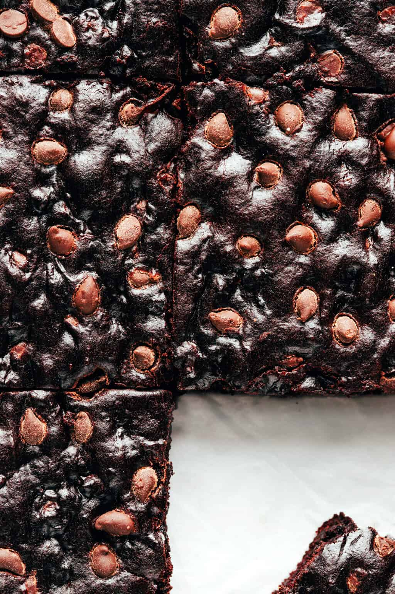

Fudgy Vegan Brownies

This one is for my chocolate lovers! If you would be happy swimming in a bowl of dark chocolate, you're going to love this recipe. This brownies are simple, rich, and so delicious!
Ingredients
- 1/4 cup well-mashed avocado
- 1/4 cup avocado oil
- 1 cup flour
- 1/2 cup cocoa powder
- 3/4 cup sugar
- 1 teaspoon baking soda
- 1 teaspoon salt
- 2/3 cup water
- 1 1/2 cups vegan chocolate chips
Instructions
- Preheat oven to 350 degrees Farenheit. Lightly grease an 8-inch square pan with cooking spray.
- In a large mixing bowl, whisk together the mashed avocado and oil to combine.
- Add in the flour, cocoa powder, sugar, baking soda, vanilla extract, salt, and water, and stir until combined.
- Gently gold in 1 cup of the chocolate chips until combined.
- Pour the batter into the prepared pan and spread it in an even layer. Sprinkle evenly with the remaining 1/2 cup chocolate chips.
- Bake for 20—30 minutes.
- Remove the pan from the oven and let cool for at least 20 minutes before serving.
- Cut into squares and dive in!!